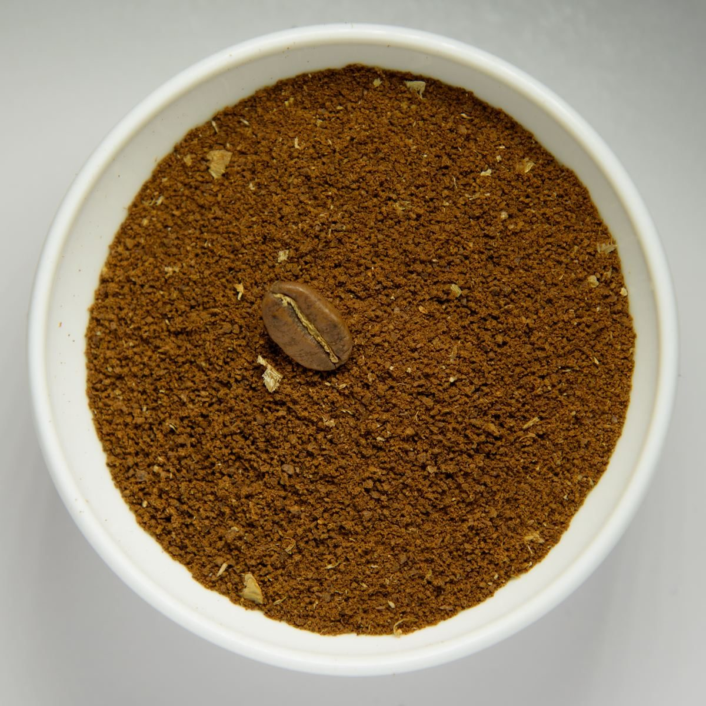

カフェ / 〒975-0031
ロマリアコーヒー
福島県南相馬市原町区錦町2丁目68-5にあるカフェ「ロマリアコーヒー」のご案内ページです。営業時間やメニューなど、詳しいことは準備中。まずはInstagramをのぞいてみてください。
制作側の連想
「ロマリア」の響きから、緯度の目盛りへ
店名の由来は分かりません。制作側は「ロマリア」という響きから、どこか遠い国の地図を連想しました。コーヒーの豆は赤道をはさむ暖かい地域で育つと言われることもあり、そこから、このページは地図の緯度線のように0°から40°まで目盛りを刻む作りにしています。制作側の連想で、お店の理念・由来とは無関係です。
0°から30°へ(イメージ)
豆から一杯まで、四つの目盛り。
写真は国外・撮影地不明のフリー素材で、お店のものでも提供内容でもありません。
- 0°

撮影地不明のイメージ - 10°

撮影地不明のイメージ - 20°

撮影地不明のイメージ - 30°
国外のイメージ(バングラデシュ)
ご案内
お店のこと(確認できたものだけ)
| 所在地 | 〒975-0031 福島県南相馬市原町区錦町2丁目68-5 |
|---|---|
| 電話 | 050-3575-2685 |
| 営業時間 | 準備中 |
| 定休日 | 準備中 |
| ご予約 | 準備中 |
| 駐車場 | 準備中 |
| SNS | Instagram @romalia_coffee |